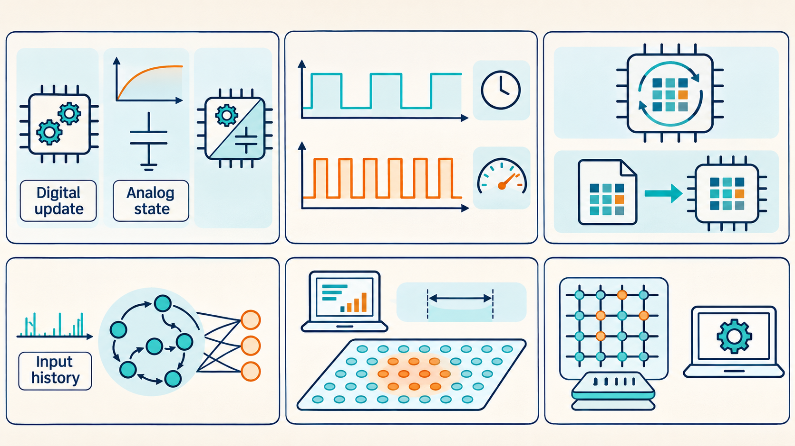
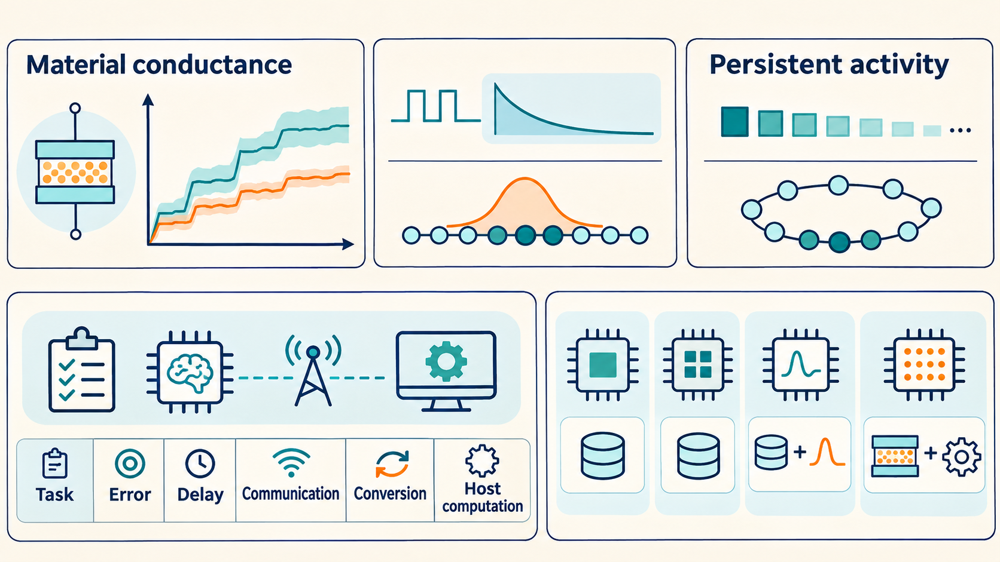

17 Neuromorphic chips choose where physics performs the calculation
Suppose we want to study how a noisy network retains an angle. One machine can calculate every state update as arithmetic. Another can let capacitor voltages perform part of the dynamics. A third can use material conductances to multiply inputs by stored weights. The scientific choice is which physical effects we want to control, measure, or exploit. This chapter compares these implementations and then examines recent demonstrations of memory and learning.
The research snapshot is October 30, 2026. “State of the art” here means selected recent capabilities supported by primary papers, with older architecture papers supplying their physical explanation. It does not mean one machine leads every task. We distinguish measured chips, experiments partly run on a separate computer, and proposed hardware evaluated by simulation. A host computer is a separate general-purpose computer that controls an experiment or performs calculations assigned outside the neuromorphic chip.
Draft diagrams: These unreviewed generated images may contain missing labels, incorrect numbers or misleading relationships. Use the chapter text and sources as the reference.


17.1 Digital and analog implementations expose different parts of the neural model
A useful platform must make the variables of interest accessible. If the question concerns a specific noise law, a digital update may allow precise control of the injected noise. If the question concerns physical circuit variability, analog dynamics expose that variability directly. Interpreting either choice as a biological result requires a matched model and experiment. Hardware calibration adjusts circuit settings to make measured device responses match requested responses more closely.
| System | Where weights and changing states reside | How the neural state changes | Consequence for a memory experiment |
|---|---|---|---|
| Loihi 2 | Local digital memory holds weights and neuron variables | Programmable, finite-precision updates; events communicate between units | Separate the chosen noise model and numerical precision from physical bit reliability |
| SpiNNaker2 | Demonstrated SNN workloads use local SRAM for parameters, weights, and states | Processor software executes time-stepped neuron updates | Check the update interval and whether the mapped workload meets its timing deadlines |
| BrainScaleS-2 | Local 6-bit SRAM weights; physical analog membrane states | Currents change capacitor voltages continuously | Measure remaining differences between responses after calibration, and relate chip time to model time |
| PCM computing systems | Conductances store weights; other states depend on the surrounding design | Electrical reads form weighted sums; analog or digital circuits perform remaining operations | Locate the recurrent state and host work before claiming a physical memory circuit |
The first two rows describe digital neural computation, while BrainScaleS-2 directly implements parts of the differential equations in analog circuitry. Its dynamics run roughly a thousand times faster than the biological model time. That acceleration makes long model intervals accessible quickly, but communication and measurement delays still occur in physical time.1
On-chip learning means that circuitry on the chip computes and applies some weight changes. It is distinct from loading previously trained weights. Loihi 2 offers programmable learning rules. SpiNNaker2’s 2026 technical preprint reports an on-chip learning implementation. BrainScaleS-2 combines local measurements with programmable processors that update weights. An experiment may still use weights trained beforehand or learning performed on a separate computer, so its learning setup must be checked.2
17.2 Recent results improve temporal computation, adaptation, and device stability
The following studies make progress on different parts of the memory problem. For each, ask what information persists and which physical component is responsible.
A useful input history on Loihi 2, 2025. Kleyko and colleagues implemented a stored history of recent inputs and functions of those inputs that include products. A trained readout uses these values to predict an output. This shows that changing chip state can supply useful information about recent inputs. It is not a measurement of indefinitely stable cue retention. Their pictured Hala Point system is much larger than the resources used in the experiment.3
Persistent spatial activity on SpiNNaker 2, September 2026. Aitsam and colleagues ran a 768-neuron recurrent sheet on one chip. A host computer processed the physical event camera’s output into a smoothed estimate of the target’s center and sent that position to the chip. The configured neural update used deterministic integer-weight dynamics, without an added stochastic neural-noise term. During an eight-second interval without input, the decoded activity center moved by at most half a cell. This establishes persistence for that interval, not a measured lifetime or a test of noise-driven diffusion. During tracking, recurrence reduced frame-to-frame jitter by 15% relative to the host-smoothed input, but added about 115 ms of lag and increased mean position error from 2.02 to 5.65 cells. The robot-guidance evaluation used a simulated robot, and its power figures were estimates. Longer-delay tests with controlled noise would help compare this implementation with the stochastic memory theory.4
Rapid adaptation using PCM, 2025. Ortner and colleagues used physical PCM weights for a recurrent spiking network that produced robotic-arm commands after a task-specific update. Earlier training adjusted the model for rapid adaptation to new tasks. The PCM units performed matrix-vector products. Other operations ran on a host computer. This locates the demonstrated advance in weight adaptation and mixed hardware computation. It does not show that PCM cells themselves sustained an autonomous recurrent activity pattern.5
Reduced material drift, online 2025 and in a 2026 issue. Wang and colleagues measured low resistance drift in a chromium-telluride phase-change material, CrTe\(_3\). Reduced drift can help a programmed conductance continue representing the intended weight. Their demonstration of several programmed resistance levels used laser programming and electrical readout. Electrical switching was a separate demonstration. Operation with several levels in nanoscale devices, performance beyond a million programming cycles, and variability across large arrays remained open. This is progress in a storage material, not a complete multilevel neuromorphic processor.6
Better temporal state, faster adaptation, and more stable weights solve different problems, so progress in one does not establish the others. For the Burak comparison, the missing measurement is often how a decoded value changes during an input-free delay.
17.3 Explicit slow memory is a current design choice, with distinct costs
Fast spiking units can lose earlier inputs before a later decision needs them. One solution is to add a slower state that summarizes recent activity and sends input back to the fast units. Sun and colleagues’ 2026 dual-memory-pathway design takes this route. Their tested slow pathway uses a linear state based on a Legendre memory unit: several stored components summarize the shape of recent input over a sliding time window. It represents a recent input history, rather than a cue held unchanged on a continuous attractor. Its proposed digital hardware holds successive slow states in registers, small, fast digital storage locations, and other variables in SRAM. The hardware results came from post-layout simulations, which model a circuit after its physical layout has been designed. They were not measurements of a fabricated chip. The weights were trained before the evaluated tasks.7
A model with one stored number illustrates gradual forgetting without reproducing that richer input history. Let \(z_k\) be current input to a stored quantity \(m_k\):
\[ m_{k+1}=\alpha m_k+\beta z_k,\qquad 0<\alpha<1. \]
Here \(m_k\) is the stored state after update \(k\), \(z_k\) is the input at that update, \(\alpha\) is the retained fraction, and \(\beta\) converts input units into state units. For gradual forgetting in this example, \(0<\alpha<1\). After input stops, \(m_{k+n}=\alpha^n m_k\). The state remembers earlier input through its present value, while gradually forgetting it. This model illustrates slow storage. It is not the full equations or an independent performance test of Sun and colleagues’ architecture.
Example: the update interval determines the physical memory time.
If updates are separated by \(\Delta t\), equating \(\alpha^n\) with \(e^{-n\Delta t/\tau_m}\) gives \(\tau_m=-\Delta t/\ln\alpha\). With \(\Delta t=1\) ms and \(\alpha=0.999\), \(\tau_m\) is about 1 second. Executing the same updates a thousand times faster reduces that physical decay time to about 1 millisecond, unless the mapping between model time and wall time is changed. A number described as “slow” must be specified relative to other processes and the task clock.
Scaling a network also adds communication constraints. Ilmberger and Schemmel’s 2025 preprint measured communication in a four-chip BrainScaleS-2 prototype. The timing matters because its analog states continue changing while messages are transmitted. A small delay in wall time can be a substantial delay in accelerated model time.8
The comparison needs a specified task, permitted error, delay, and system boundary. Energy for a matrix operation omits state maintenance, communication, conversion, and host work when those are outside the measured unit. The next chapter turns these qualifications into an experiment that can compare the machines on the same memory question.
Intel Labs (2021), Taking neuromorphic computing to the next level with Loihi 2, pp. 5–7; Scholze et al. (2026), The SpiNNaker2 chip, version 1, Section 4.4; Pehle et al. (2022), The BrainScaleS-2 accelerated neuromorphic system with hybrid plasticity, Sections 2.1–2.3; Le Gallo et al. (2023), A 64-core mixed-signal in-memory compute chip, DOI. Full entries are in References. ↩︎
The same Loihi 2 brief, learning-rule section; Scholze et al. (2026), Section 4.6; Pehle et al. (2022), Section 2.3. These describe capabilities and the reported demonstrations, not one common learning benchmark. ↩︎
Kleyko, D., Kymn, C. J., Thomas, A., Olshausen, B. A., Sommer, F. T., & Frady, E. P. (2025). Principled neuromorphic reservoir computing. Nature Communications, 16, 640. Hardware experiments and Figure 5. DOI.↩︎
Aitsam, M., Htet, A., Hasan, S. S., Jimenez Rodriguez, A., & Di Nuovo, A. (2026). A spiking continuous attractor network for event-driven neuromorphic robot guidance. Frontiers in Neuroscience, 20, 1910808. Sections 2.1–2.5, 3.2, and 4.1–4.5. DOI.↩︎
Ortner, T., et al. (2025). Rapid learning with phase-change memory-based in-memory computing through learning-to-learn. Nature Communications, 16, 1243. Results, Figures 4–5, and Methods p. 11. DOI. ↩︎
Wang, X., et al. (2026; online October 1, 2025). Amorphous phase-change memory alloy with no resistance drift. Nature Materials, 25, 456–462. Electrical measurements and discussion, printed pp. 459–461. DOI. ↩︎
Sun, P., Su, Z., Achterberg, J., Indiveri, G., Goodman, D. F. M., & Akarca, D. (2026). Algorithm–hardware co-design of neuromorphic networks with dual memory pathways. Nature Machine Intelligence, 8, 901–912. Figure 4 and Methods, slow memory pathway and implementation and evaluation methodology. DOI. ↩︎
Ilmberger, J., & Schemmel, J. (2025). The BrainScaleS-2 multi-chip system: Interconnecting continuous-time neuromorphic compute substrates. arXiv:2512.03781v1, December 3, 2025. Sections III–V. Preprint. The reported prototype has four chips. ↩︎